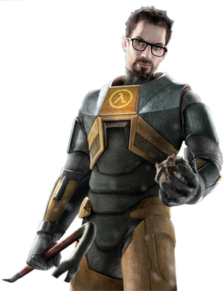
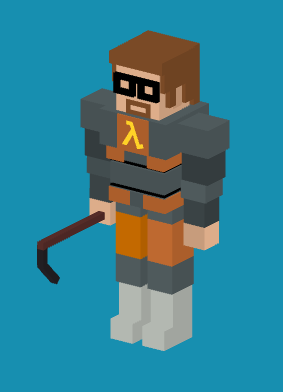
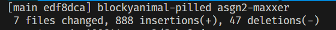

Assignment 2
Link to asgn5a.html
Link to live hosted version on Github Pages
Notes to Grader
This assignment took me about 25 hours cross 4 or 5 days, and it was definitely an experience.
For my block animal, I chose Gordon Freeman, the protagonist of the Half-Life video game series, in his iconic HEV Suit with his signature crowbar in hand.


I created a Cube class that lets me instantiate cubes with a given color at a given coordinate, as well as scale, rotate, or translate it with matrices. There are six primary components: the head, the left arm, the right arm, the torso, the left leg, and the right leg. Each of these is comprised of numerous amounts of cubes, and placing and moving around these cubes took me several days.
The head has 22 cubes
- 1 for the base head
- 3 for the hair on the left side of the head
- 3 for the hair on the right side of the head
- 2 for each ear
- 1 for the top of the head
- 1 for the back of the head
- 7 for the glasses
- 4 for the beard
The torso has 18 cubes
- 1 for the chest
- 1 for the lower chest
- 1 for the stomach
- 1 for the waist
- 2 for the black dividers between the mid sections
- 1 orange square on the chest where the Lambda symbol goes
- 5 orange strips just under the Lambda symbol going around the suit (2 front, 2 side, 1 back)
- 5 orange strips around the waist (2 front, 2 side, 1, back)
- 1 orange square on the back
The left arm (and by extension, right arm) has 5 cubes
- 1 for the shoulder
- 1 for the upper arm
- 1 for the elbow
- 1 for the forarm
- 1 for the hand
The left leg (and by extension, right leg) has 5 cubes
- 1 for the upper hip
- 1 for the lower hip
- 1 for the knee
- 1 for the upper boot/shin
- 1 for the lower boot/foot
The crowbar has 3 cubes
- 1 for the handle
- 2 for the bend
All in all, that adds up to 63 cubes. In addition, I also make my own custom geometry in the form of the Lambda symbol on the chest. For this shape, rather than just placing cubes on top of each other, I decided to instead do what I did for Assignment 1 and trace out the symbol in Photoshop, draw out the triangles, import the drawing into Desmos, calculate coordinates for each vector, and then create a custom Lambda.js class to render in the Lambda symbol.

The Desmos link can be found here.
In terms of joint movement, all body parts can be rotated to a realistic degree (the body parts bed only as far as they would on a normal human), and there are sliders to control all of this, plus reset buttons to return to the default state.
In terms of animation there are two: the first can be activated either by clicking the "Crowbar" button or by shift + left-clicking on the canvas. In this animation, Gordon Freeman will raise his right arm (the one with the crowbar) and swing it. It will then "hit" and play the crowbar hit sound effect from the original Half-Life game from 1998. This animation cannot be spammed, and in fact the button and shift + left-click functionality disables itself when any animation is playing (including itself).
The other animation I made is a basic walking animation, in which Gordon moves his legs and arms the way a human would walk. This animation, unlike the crowbar animation, is infinite. It plays when you select "walking" in the animation dropdown and will keep playing forever until you switch back to "none". When you switch to the walking animation, it will play the Valve startup sound (the sound that plays when you start up Half-Life or any other game made by Valve). I have it configured so that if you switch back to "none" before the audio has finished playing, it will cut off the sound.
I also added the ability to rotate the model with the mouse cursor, but this functionality is so jank that I added a toggle to disable it entirely.
In terms of performance, it seems to always maintain 100+ FPS at minimum.
All in all, despite how time consuming it was, I had fun doing this assignment :)
